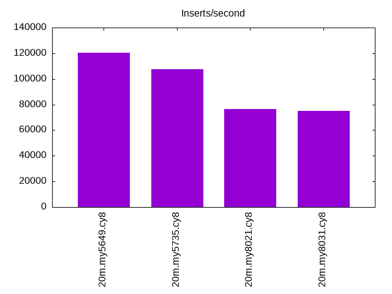
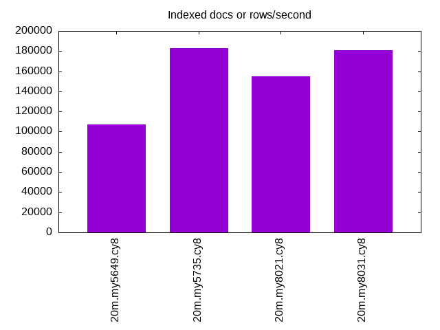
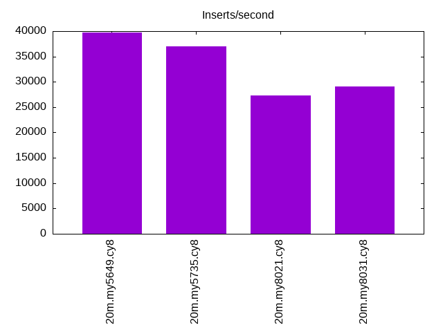
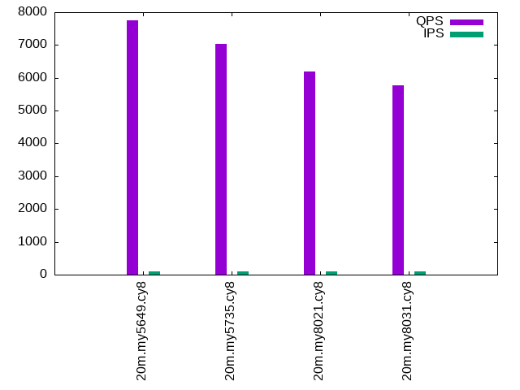
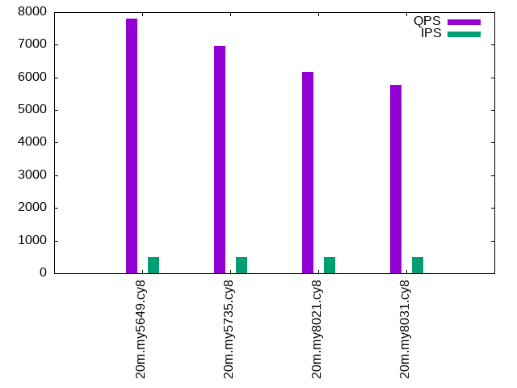
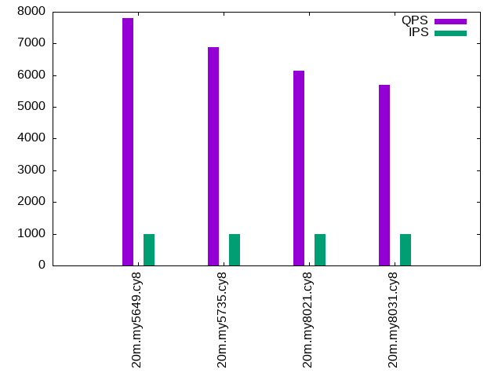

This is a report for the insert benchmark with 20M docs and 1 client(s). It is generated by scripts (bash, awk, sed) and Tufte might not be impressed. An overview of the insert benchmark is here and a short update is here. Below, by DBMS, I mean DBMS+version.config. An example is my8020.c10b40 where my means MySQL, 8020 is version 8.0.20 and c10b40 is the name for the configuration file.
The test server is an Intel NUC with 4 cores, 16G RAM and a Samsung 970 EVO. More details are here. Clients and the DBMS share one server. The per-database configs are in the per-database subdirectories here.
The tested DBMS are:
The numbers are inserts/s for l.i0 and l.i1, indexed docs (or rows) /s for l.x and queries/s for q*.2. The values are the average rate over the entire test for inserts (IPS) and queries (QPS). The range of values for IPS and QPS is split into 3 parts: bottom 25%, middle 50%, top 25%. Values in the bottom 25% have a red background, values in the top 25% have a green background and values in the middle have no color. A gray background is used for values that can be ignored because the DBMS did not sustain the target insert rate. Red backgrounds are not used when the minimum value is within 80% of the max value.
| dbms | l.i0 | l.x | l.i1 | q100.1 | q500.1 | q1000.1 |
|---|---|---|---|---|---|---|
| 20m.my5649.cy8 | 120482 | 107487 | 39761 | 7745 | 7812 | 7800 |
| 20m.my5735.cy8 | 107527 | 182727 | 37037 | 7033 | 6968 | 6897 |
| 20m.my8021.cy8 | 76628 | 154615 | 27285 | 6193 | 6165 | 6153 |
| 20m.my8031.cy8 | 75188 | 181081 | 29028 | 5782 | 5771 | 5694 |
This lists the average rate of inserts/s for the tests that do inserts concurrent with queries. For such tests the query rate is listed in the table above. The read+write tests are setup so that the insert rate should match the target rate every second. Cells that are not at least 95% of the target have a red background to indicate a failure to satisfy the target.
| dbms | q100.1 | q500.1 | q1000.1 |
|---|---|---|---|
| my5649.cy8 | 100 | 499 | 999 |
| my5735.cy8 | 100 | 499 | 999 |
| my8021.cy8 | 100 | 499 | 999 |
| my8031.cy8 | 100 | 499 | 999 |
| target | 100 | 500 | 1000 |
l.i0: load without secondary indexes. Graphs for performance per 1-second interval are here.
Average throughput:
Insert response time histogram: each cell has the percentage of responses that take <= the time in the header and max is the max response time in seconds. For the max column values in the top 25% of the range have a red background and in the bottom 25% of the range have a green background. The red background is not used when the min value is within 80% of the max value.
| dbms | 256us | 1ms | 4ms | 16ms | 64ms | 256ms | 1s | 4s | 16s | gt | max |
|---|---|---|---|---|---|---|---|---|---|---|---|
| my5649.cy8 | 98.967 | 0.927 | 0.094 | 0.009 | 0.003 | 0.253 | |||||
| my5735.cy8 | 98.728 | 1.027 | 0.132 | 0.110 | 0.003 | 0.119 | |||||
| my8021.cy8 | 99.567 | 0.345 | 0.088 | 0.054 | |||||||
| my8031.cy8 | 99.625 | 0.256 | 0.120 | 0.051 |
Performance metrics for the DBMS listed above. Some are normalized by throughput, others are not. Legend for results is here.
ips qps rps rmbps wps wmbps rpq rkbpq wpi wkbpi csps cpups cspq cpupq dbgb1 dbgb2 rss maxop p50 p99 tag 120482 0 1061 4.1 41.3 27.6 0.009 0.035 0.000 0.234 13827 40.1 0.115 13 1.3 41.8 2.1 0.253 122912 83436 20m.my5649.cy8 107527 0 0 0.0 151.4 27.3 0.000 0.000 0.001 0.260 10989 40.1 0.102 15 1.3 41.8 2.3 0.119 108220 82905 20m.my5735.cy8 76628 0 0 0.0 110.9 20.1 0.000 0.000 0.001 0.268 18828 38.2 0.246 20 1.3 41.9 2.5 0.054 77082 71347 20m.my8021.cy8 75188 0 0 0.0 390.7 26.9 0.000 0.000 0.005 0.367 8567 35.5 0.114 19 1.3 3.8 2.5 0.051 75717 69026 20m.my8031.cy8
l.x: create secondary indexes.
Average throughput:
Performance metrics for the DBMS listed above. Some are normalized by throughput, others are not. Legend for results is here.
ips qps rps rmbps wps wmbps rpq rkbpq wpi wkbpi csps cpups cspq cpupq dbgb1 dbgb2 rss maxop p50 p99 tag 107487 0 32 0.1 1305.5 113.3 0.000 0.001 0.012 1.079 4031 20.2 0.038 8 2.7 43.2 3.5 0.012 NA NA 20m.my5649.cy8 182727 0 0 0.0 1991.0 163.6 0.000 0.000 0.011 0.917 9987 23.7 0.055 5 3.0 43.5 3.7 0.016 NA NA 20m.my5735.cy8 154615 0 0 0.0 1630.7 125.5 0.000 0.000 0.011 0.831 9086 23.6 0.059 6 3.0 43.5 3.0 0.013 NA NA 20m.my8021.cy8 181081 0 944 63.1 3348.1 185.9 0.005 0.357 0.018 1.051 9871 71.5 0.055 16 3.0 5.4 3.9 0.012 NA NA 20m.my8031.cy8
l.i1: continue load after secondary indexes created. Graphs for performance per 1-second interval are here.
Average throughput:
Insert response time histogram: each cell has the percentage of responses that take <= the time in the header and max is the max response time in seconds. For the max column values in the top 25% of the range have a red background and in the bottom 25% of the range have a green background. The red background is not used when the min value is within 80% of the max value.
| dbms | 256us | 1ms | 4ms | 16ms | 64ms | 256ms | 1s | 4s | 16s | gt | max |
|---|---|---|---|---|---|---|---|---|---|---|---|
| my5649.cy8 | 3.429 | 95.637 | 0.792 | 0.137 | 0.004 | nonzero | 0.292 | ||||
| my5735.cy8 | 99.273 | 0.569 | 0.157 | 0.002 | 0.118 | ||||||
| my8021.cy8 | 99.115 | 0.640 | 0.201 | 0.044 | 0.157 | ||||||
| my8031.cy8 | 98.797 | 0.955 | 0.238 | 0.010 | 0.156 |
Performance metrics for the DBMS listed above. Some are normalized by throughput, others are not. Legend for results is here.
ips qps rps rmbps wps wmbps rpq rkbpq wpi wkbpi csps cpups cspq cpupq dbgb1 dbgb2 rss maxop p50 p99 tag 39761 0 699 2.7 80.8 25.3 0.018 0.070 0.002 0.651 9232 29.0 0.232 29 7.9 48.4 7.9 0.292 41770 4845 20m.my5649.cy8 37037 0 0 0.0 842.3 45.7 0.000 0.000 0.023 1.265 9818 30.3 0.265 33 7.9 48.4 8.2 0.118 38573 3097 20m.my5735.cy8 27285 0 126 2.0 141.9 18.8 0.005 0.074 0.005 0.706 13836 31.0 0.507 45 7.9 48.4 8.3 0.157 28968 550 20m.my8021.cy8 29028 0 134 2.1 2269.1 75.4 0.005 0.074 0.078 2.662 12607 30.2 0.434 42 7.9 10.3 8.3 0.156 30866 1199 20m.my8031.cy8
q100.1: range queries with 100 insert/s per client. Graphs for performance per 1-second interval are here.
Average throughput:
Query response time histogram: each cell has the percentage of responses that take <= the time in the header and max is the max response time in seconds. For max values in the top 25% of the range have a red background and in the bottom 25% of the range have a green background. The red background is not used when the min value is within 80% of the max value.
| dbms | 256us | 1ms | 4ms | 16ms | 64ms | 256ms | 1s | 4s | 16s | gt | max |
|---|---|---|---|---|---|---|---|---|---|---|---|
| my5649.cy8 | 97.540 | 2.455 | 0.002 | 0.004 | nonzero | 0.017 | |||||
| my5735.cy8 | 99.837 | 0.163 | nonzero | nonzero | nonzero | 0.020 | |||||
| my8021.cy8 | 99.176 | 0.823 | nonzero | nonzero | nonzero | 0.020 | |||||
| my8031.cy8 | 98.970 | 1.029 | nonzero | nonzero | nonzero | 0.020 |
Insert response time histogram: each cell has the percentage of responses that take <= the time in the header and max is the max response time in seconds. For max values in the top 25% of the range have a red background and in the bottom 25% of the range have a green background. The red background is not used when the min value is within 80% of the max value.
| dbms | 256us | 1ms | 4ms | 16ms | 64ms | 256ms | 1s | 4s | 16s | gt | max |
|---|---|---|---|---|---|---|---|---|---|---|---|
| my5649.cy8 | 55.139 | 43.944 | 0.917 | 0.019 | |||||||
| my5735.cy8 | 99.278 | 0.097 | 0.625 | 0.024 | |||||||
| my8021.cy8 | 98.458 | 1.042 | 0.500 | 0.025 | |||||||
| my8031.cy8 | 99.194 | 0.181 | 0.625 | 0.024 |
Performance metrics for the DBMS listed above. Some are normalized by throughput, others are not. Legend for results is here.
ips qps rps rmbps wps wmbps rpq rkbpq wpi wkbpi csps cpups cspq cpupq dbgb1 dbgb2 rss maxop p50 p99 tag 100 7745 2 0.0 96.6 3.0 0.000 0.001 0.967 30.301 30020 25.5 3.876 132 8.1 48.6 8.0 0.017 8199 3487 20m.my5649.cy8 100 7033 0 0.0 13.2 0.4 0.000 0.000 0.132 4.061 27053 26.0 3.847 148 8.1 48.6 8.3 0.020 7032 6904 20m.my5735.cy8 100 6193 0 0.0 89.0 2.2 0.000 0.000 0.892 22.118 24686 26.2 3.986 169 8.1 48.6 8.5 0.020 6201 6025 20m.my8021.cy8 100 5782 0 0.0 126.3 3.1 0.000 0.000 1.264 31.505 22796 25.8 3.943 178 8.1 10.5 8.5 0.020 5786 5628 20m.my8031.cy8
q500.1: range queries with 500 insert/s per client. Graphs for performance per 1-second interval are here.
Average throughput:
Query response time histogram: each cell has the percentage of responses that take <= the time in the header and max is the max response time in seconds. For max values in the top 25% of the range have a red background and in the bottom 25% of the range have a green background. The red background is not used when the min value is within 80% of the max value.
| dbms | 256us | 1ms | 4ms | 16ms | 64ms | 256ms | 1s | 4s | 16s | gt | max |
|---|---|---|---|---|---|---|---|---|---|---|---|
| my5649.cy8 | 97.960 | 2.033 | 0.003 | 0.004 | nonzero | 0.017 | |||||
| my5735.cy8 | 99.660 | 0.338 | 0.002 | nonzero | nonzero | 0.023 | |||||
| my8021.cy8 | 99.113 | 0.885 | 0.001 | nonzero | nonzero | 0.020 | |||||
| my8031.cy8 | 98.661 | 1.337 | 0.002 | nonzero | nonzero | 0.024 |
Insert response time histogram: each cell has the percentage of responses that take <= the time in the header and max is the max response time in seconds. For max values in the top 25% of the range have a red background and in the bottom 25% of the range have a green background. The red background is not used when the min value is within 80% of the max value.
| dbms | 256us | 1ms | 4ms | 16ms | 64ms | 256ms | 1s | 4s | 16s | gt | max |
|---|---|---|---|---|---|---|---|---|---|---|---|
| my5649.cy8 | 0.075 | 90.369 | 9.453 | 0.103 | 0.018 | ||||||
| my5735.cy8 | 99.497 | 0.103 | 0.400 | 0.026 | |||||||
| my8021.cy8 | 98.867 | 0.964 | 0.169 | 0.026 | |||||||
| my8031.cy8 | 99.419 | 0.183 | 0.397 | 0.028 |
Performance metrics for the DBMS listed above. Some are normalized by throughput, others are not. Legend for results is here.
ips qps rps rmbps wps wmbps rpq rkbpq wpi wkbpi csps cpups cspq cpupq dbgb1 dbgb2 rss maxop p50 p99 tag 499 7812 9 0.0 2.7 0.4 0.001 0.005 0.005 0.771 30062 25.7 3.848 132 8.7 49.2 8.6 0.017 8183 3932 20m.my5649.cy8 499 6968 0 0.0 17.9 0.7 0.000 0.000 0.036 1.521 26885 26.4 3.858 152 8.7 49.2 8.9 0.023 6971 6553 20m.my5735.cy8 499 6165 0 0.0 7.9 0.5 0.000 0.000 0.016 0.956 24481 26.5 3.971 172 8.7 49.3 9.1 0.020 6170 5948 20m.my8021.cy8 499 5771 0 0.0 232.9 6.1 0.000 0.000 0.466 12.453 23075 26.4 3.998 183 8.7 11.1 9.1 0.024 5786 5418 20m.my8031.cy8
q1000.1: range queries with 1000 insert/s per client. Graphs for performance per 1-second interval are here.
Average throughput:
Query response time histogram: each cell has the percentage of responses that take <= the time in the header and max is the max response time in seconds. For max values in the top 25% of the range have a red background and in the bottom 25% of the range have a green background. The red background is not used when the min value is within 80% of the max value.
| dbms | 256us | 1ms | 4ms | 16ms | 64ms | 256ms | 1s | 4s | 16s | gt | max |
|---|---|---|---|---|---|---|---|---|---|---|---|
| my5649.cy8 | 98.350 | 1.642 | 0.005 | 0.003 | nonzero | 0.016 | |||||
| my5735.cy8 | 99.546 | 0.450 | 0.004 | nonzero | nonzero | 0.023 | |||||
| my8021.cy8 | 99.093 | 0.904 | 0.002 | nonzero | nonzero | 0.021 | |||||
| my8031.cy8 | 98.215 | 1.780 | 0.005 | nonzero | nonzero | 0.022 |
Insert response time histogram: each cell has the percentage of responses that take <= the time in the header and max is the max response time in seconds. For max values in the top 25% of the range have a red background and in the bottom 25% of the range have a green background. The red background is not used when the min value is within 80% of the max value.
| dbms | 256us | 1ms | 4ms | 16ms | 64ms | 256ms | 1s | 4s | 16s | gt | max |
|---|---|---|---|---|---|---|---|---|---|---|---|
| my5649.cy8 | 0.164 | 94.943 | 4.869 | 0.024 | 0.019 | ||||||
| my5735.cy8 | 99.806 | 0.064 | 0.131 | 0.042 | |||||||
| my8021.cy8 | 98.886 | 1.032 | 0.082 | 0.026 | |||||||
| my8031.cy8 | 99.715 | 0.151 | 0.133 | 0.041 |
Performance metrics for the DBMS listed above. Some are normalized by throughput, others are not. Legend for results is here.
ips qps rps rmbps wps wmbps rpq rkbpq wpi wkbpi csps cpups cspq cpupq dbgb1 dbgb2 rss maxop p50 p99 tag 999 7800 18 0.1 2.5 0.4 0.002 0.009 0.003 0.445 30114 26.2 3.861 134 9.1 49.6 9.0 0.016 8103 4315 20m.my5649.cy8 999 6897 0 0.0 30.6 1.1 0.000 0.000 0.031 1.129 26746 26.8 3.878 155 9.1 49.7 9.3 0.023 6904 6776 20m.my5735.cy8 999 6153 0 0.0 15.6 0.7 0.000 0.000 0.016 0.718 24722 26.9 4.018 175 9.1 49.7 9.5 0.021 6155 5995 20m.my8021.cy8 999 5694 0 0.0 372.3 9.6 0.000 0.000 0.373 9.889 23218 26.8 4.078 188 9.1 11.6 9.5 0.022 5691 5562 20m.my8031.cy8
l.i0: load without secondary indexes
Performance metrics for all DBMS, not just the ones listed above. Some are normalized by throughput, others are not. Legend for results is here.
ips qps rps rmbps wps wmbps rpq rkbpq wpi wkbpi csps cpups cspq cpupq dbgb1 dbgb2 rss maxop p50 p99 tag 120482 0 1061 4.1 41.3 27.6 0.009 0.035 0.000 0.234 13827 40.1 0.115 13 1.3 41.8 2.1 0.253 122912 83436 20m.my5649.cy8 107527 0 0 0.0 151.4 27.3 0.000 0.000 0.001 0.260 10989 40.1 0.102 15 1.3 41.8 2.3 0.119 108220 82905 20m.my5735.cy8 76628 0 0 0.0 110.9 20.1 0.000 0.000 0.001 0.268 18828 38.2 0.246 20 1.3 41.9 2.5 0.054 77082 71347 20m.my8021.cy8 75188 0 0 0.0 390.7 26.9 0.000 0.000 0.005 0.367 8567 35.5 0.114 19 1.3 3.8 2.5 0.051 75717 69026 20m.my8031.cy8
l.x: create secondary indexes
Performance metrics for all DBMS, not just the ones listed above. Some are normalized by throughput, others are not. Legend for results is here.
ips qps rps rmbps wps wmbps rpq rkbpq wpi wkbpi csps cpups cspq cpupq dbgb1 dbgb2 rss maxop p50 p99 tag 107487 0 32 0.1 1305.5 113.3 0.000 0.001 0.012 1.079 4031 20.2 0.038 8 2.7 43.2 3.5 0.012 NA NA 20m.my5649.cy8 182727 0 0 0.0 1991.0 163.6 0.000 0.000 0.011 0.917 9987 23.7 0.055 5 3.0 43.5 3.7 0.016 NA NA 20m.my5735.cy8 154615 0 0 0.0 1630.7 125.5 0.000 0.000 0.011 0.831 9086 23.6 0.059 6 3.0 43.5 3.0 0.013 NA NA 20m.my8021.cy8 181081 0 944 63.1 3348.1 185.9 0.005 0.357 0.018 1.051 9871 71.5 0.055 16 3.0 5.4 3.9 0.012 NA NA 20m.my8031.cy8
l.i1: continue load after secondary indexes created
Performance metrics for all DBMS, not just the ones listed above. Some are normalized by throughput, others are not. Legend for results is here.
ips qps rps rmbps wps wmbps rpq rkbpq wpi wkbpi csps cpups cspq cpupq dbgb1 dbgb2 rss maxop p50 p99 tag 39761 0 699 2.7 80.8 25.3 0.018 0.070 0.002 0.651 9232 29.0 0.232 29 7.9 48.4 7.9 0.292 41770 4845 20m.my5649.cy8 37037 0 0 0.0 842.3 45.7 0.000 0.000 0.023 1.265 9818 30.3 0.265 33 7.9 48.4 8.2 0.118 38573 3097 20m.my5735.cy8 27285 0 126 2.0 141.9 18.8 0.005 0.074 0.005 0.706 13836 31.0 0.507 45 7.9 48.4 8.3 0.157 28968 550 20m.my8021.cy8 29028 0 134 2.1 2269.1 75.4 0.005 0.074 0.078 2.662 12607 30.2 0.434 42 7.9 10.3 8.3 0.156 30866 1199 20m.my8031.cy8
q100.1: range queries with 100 insert/s per client
Performance metrics for all DBMS, not just the ones listed above. Some are normalized by throughput, others are not. Legend for results is here.
ips qps rps rmbps wps wmbps rpq rkbpq wpi wkbpi csps cpups cspq cpupq dbgb1 dbgb2 rss maxop p50 p99 tag 100 7745 2 0.0 96.6 3.0 0.000 0.001 0.967 30.301 30020 25.5 3.876 132 8.1 48.6 8.0 0.017 8199 3487 20m.my5649.cy8 100 7033 0 0.0 13.2 0.4 0.000 0.000 0.132 4.061 27053 26.0 3.847 148 8.1 48.6 8.3 0.020 7032 6904 20m.my5735.cy8 100 6193 0 0.0 89.0 2.2 0.000 0.000 0.892 22.118 24686 26.2 3.986 169 8.1 48.6 8.5 0.020 6201 6025 20m.my8021.cy8 100 5782 0 0.0 126.3 3.1 0.000 0.000 1.264 31.505 22796 25.8 3.943 178 8.1 10.5 8.5 0.020 5786 5628 20m.my8031.cy8
q500.1: range queries with 500 insert/s per client
Performance metrics for all DBMS, not just the ones listed above. Some are normalized by throughput, others are not. Legend for results is here.
ips qps rps rmbps wps wmbps rpq rkbpq wpi wkbpi csps cpups cspq cpupq dbgb1 dbgb2 rss maxop p50 p99 tag 499 7812 9 0.0 2.7 0.4 0.001 0.005 0.005 0.771 30062 25.7 3.848 132 8.7 49.2 8.6 0.017 8183 3932 20m.my5649.cy8 499 6968 0 0.0 17.9 0.7 0.000 0.000 0.036 1.521 26885 26.4 3.858 152 8.7 49.2 8.9 0.023 6971 6553 20m.my5735.cy8 499 6165 0 0.0 7.9 0.5 0.000 0.000 0.016 0.956 24481 26.5 3.971 172 8.7 49.3 9.1 0.020 6170 5948 20m.my8021.cy8 499 5771 0 0.0 232.9 6.1 0.000 0.000 0.466 12.453 23075 26.4 3.998 183 8.7 11.1 9.1 0.024 5786 5418 20m.my8031.cy8
q1000.1: range queries with 1000 insert/s per client
Performance metrics for all DBMS, not just the ones listed above. Some are normalized by throughput, others are not. Legend for results is here.
ips qps rps rmbps wps wmbps rpq rkbpq wpi wkbpi csps cpups cspq cpupq dbgb1 dbgb2 rss maxop p50 p99 tag 999 7800 18 0.1 2.5 0.4 0.002 0.009 0.003 0.445 30114 26.2 3.861 134 9.1 49.6 9.0 0.016 8103 4315 20m.my5649.cy8 999 6897 0 0.0 30.6 1.1 0.000 0.000 0.031 1.129 26746 26.8 3.878 155 9.1 49.7 9.3 0.023 6904 6776 20m.my5735.cy8 999 6153 0 0.0 15.6 0.7 0.000 0.000 0.016 0.718 24722 26.9 4.018 175 9.1 49.7 9.5 0.021 6155 5995 20m.my8021.cy8 999 5694 0 0.0 372.3 9.6 0.000 0.000 0.373 9.889 23218 26.8 4.078 188 9.1 11.6 9.5 0.022 5691 5562 20m.my8031.cy8
Insert response time histogram
256us 1ms 4ms 16ms 64ms 256ms 1s 4s 16s gt max tag 0.000 98.967 0.927 0.094 0.009 0.003 0.000 0.000 0.000 0.000 0.253 my5649.cy8 0.000 98.728 1.027 0.132 0.110 0.003 0.000 0.000 0.000 0.000 0.119 my5735.cy8 0.000 0.000 99.567 0.345 0.088 0.000 0.000 0.000 0.000 0.000 0.054 my8021.cy8 0.000 0.000 99.625 0.256 0.120 0.000 0.000 0.000 0.000 0.000 0.051 my8031.cy8
TODO - determine whether there is data for create index response time
Insert response time histogram
256us 1ms 4ms 16ms 64ms 256ms 1s 4s 16s gt max tag 0.000 3.429 95.637 0.792 0.137 0.004 nonzero 0.000 0.000 0.000 0.292 my5649.cy8 0.000 0.000 99.273 0.569 0.157 0.002 0.000 0.000 0.000 0.000 0.118 my5735.cy8 0.000 0.000 99.115 0.640 0.201 0.044 0.000 0.000 0.000 0.000 0.157 my8021.cy8 0.000 0.000 98.797 0.955 0.238 0.010 0.000 0.000 0.000 0.000 0.156 my8031.cy8
Query response time histogram
256us 1ms 4ms 16ms 64ms 256ms 1s 4s 16s gt max tag 97.540 2.455 0.002 0.004 nonzero 0.000 0.000 0.000 0.000 0.000 0.017 my5649.cy8 99.837 0.163 nonzero nonzero nonzero 0.000 0.000 0.000 0.000 0.000 0.020 my5735.cy8 99.176 0.823 nonzero nonzero nonzero 0.000 0.000 0.000 0.000 0.000 0.020 my8021.cy8 98.970 1.029 nonzero nonzero nonzero 0.000 0.000 0.000 0.000 0.000 0.020 my8031.cy8
Insert response time histogram
256us 1ms 4ms 16ms 64ms 256ms 1s 4s 16s gt max tag 0.000 0.000 55.139 43.944 0.917 0.000 0.000 0.000 0.000 0.000 0.019 my5649.cy8 0.000 0.000 99.278 0.097 0.625 0.000 0.000 0.000 0.000 0.000 0.024 my5735.cy8 0.000 0.000 98.458 1.042 0.500 0.000 0.000 0.000 0.000 0.000 0.025 my8021.cy8 0.000 0.000 99.194 0.181 0.625 0.000 0.000 0.000 0.000 0.000 0.024 my8031.cy8
Query response time histogram
256us 1ms 4ms 16ms 64ms 256ms 1s 4s 16s gt max tag 97.960 2.033 0.003 0.004 nonzero 0.000 0.000 0.000 0.000 0.000 0.017 my5649.cy8 99.660 0.338 0.002 nonzero nonzero 0.000 0.000 0.000 0.000 0.000 0.023 my5735.cy8 99.113 0.885 0.001 nonzero nonzero 0.000 0.000 0.000 0.000 0.000 0.020 my8021.cy8 98.661 1.337 0.002 nonzero nonzero 0.000 0.000 0.000 0.000 0.000 0.024 my8031.cy8
Insert response time histogram
256us 1ms 4ms 16ms 64ms 256ms 1s 4s 16s gt max tag 0.000 0.075 90.369 9.453 0.103 0.000 0.000 0.000 0.000 0.000 0.018 my5649.cy8 0.000 0.000 99.497 0.103 0.400 0.000 0.000 0.000 0.000 0.000 0.026 my5735.cy8 0.000 0.000 98.867 0.964 0.169 0.000 0.000 0.000 0.000 0.000 0.026 my8021.cy8 0.000 0.000 99.419 0.183 0.397 0.000 0.000 0.000 0.000 0.000 0.028 my8031.cy8
Query response time histogram
256us 1ms 4ms 16ms 64ms 256ms 1s 4s 16s gt max tag 98.350 1.642 0.005 0.003 nonzero 0.000 0.000 0.000 0.000 0.000 0.016 my5649.cy8 99.546 0.450 0.004 nonzero nonzero 0.000 0.000 0.000 0.000 0.000 0.023 my5735.cy8 99.093 0.904 0.002 nonzero nonzero 0.000 0.000 0.000 0.000 0.000 0.021 my8021.cy8 98.215 1.780 0.005 nonzero nonzero 0.000 0.000 0.000 0.000 0.000 0.022 my8031.cy8
Insert response time histogram
256us 1ms 4ms 16ms 64ms 256ms 1s 4s 16s gt max tag 0.000 0.164 94.943 4.869 0.024 0.000 0.000 0.000 0.000 0.000 0.019 my5649.cy8 0.000 0.000 99.806 0.064 0.131 0.000 0.000 0.000 0.000 0.000 0.042 my5735.cy8 0.000 0.000 98.886 1.032 0.082 0.000 0.000 0.000 0.000 0.000 0.026 my8021.cy8 0.000 0.000 99.715 0.151 0.133 0.000 0.000 0.000 0.000 0.000 0.041 my8031.cy8